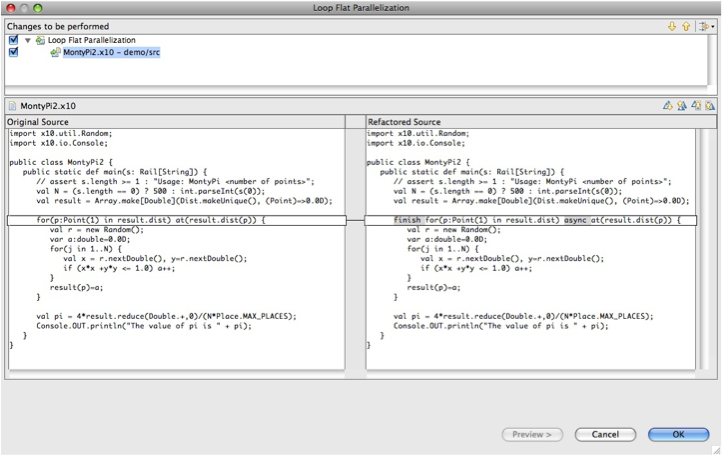

Select an area of code, and use the right mouse (context menu) Refactor. You will see a selection of refactorings that are available. In this example, "Loop Flat Parallelization" is selected.
Need image of next dialog. Select verbose (or not?) and click "Preview" to see the next screen.

The old and proposed new version of the code are show side-by-side. Differences are indicated by shaded areas. Select the "OK" button to accept the changes and modify your source file.